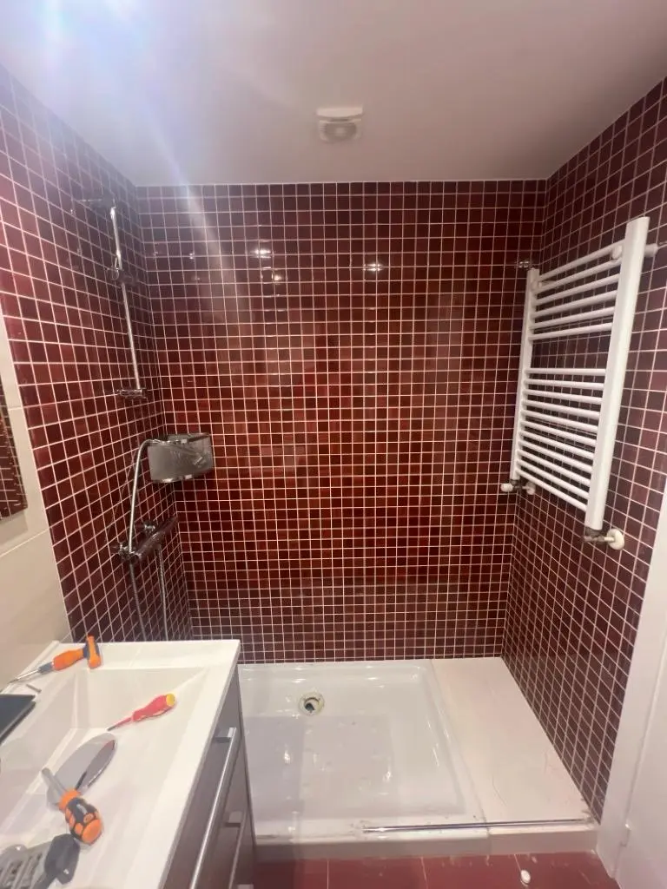
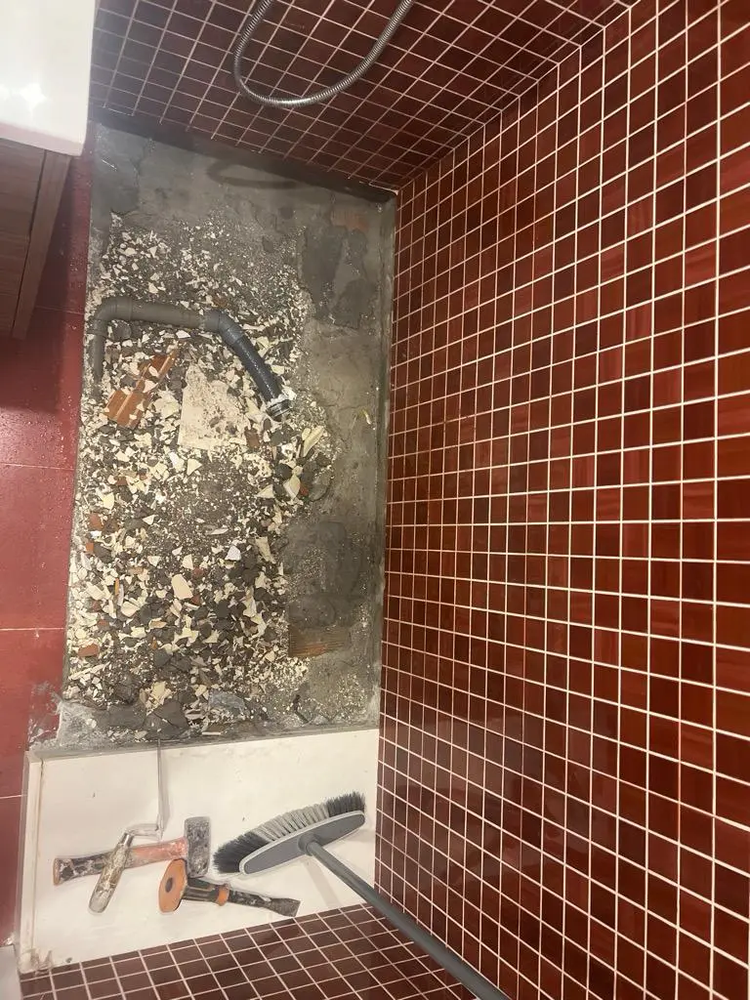
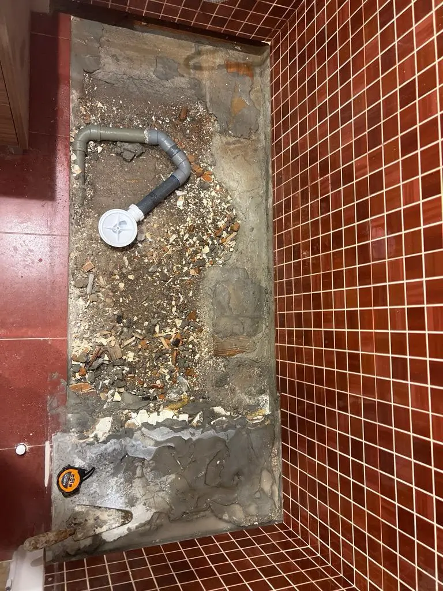
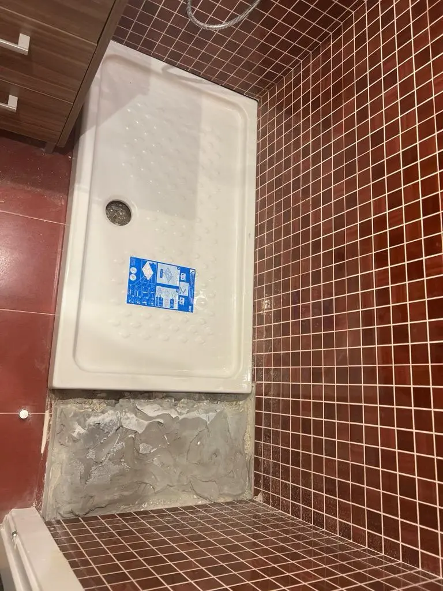
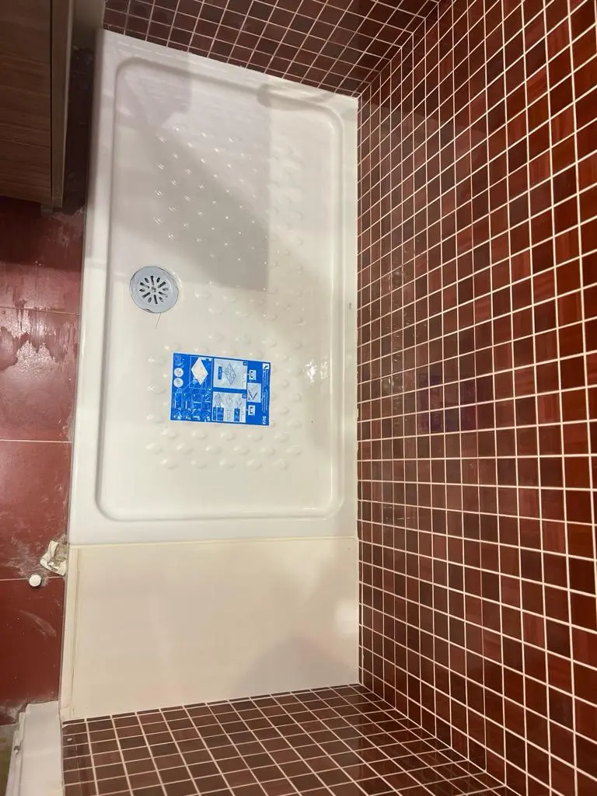
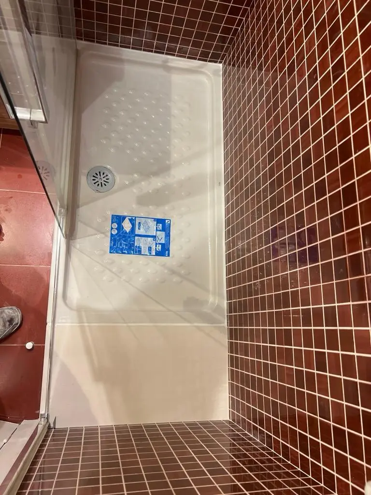
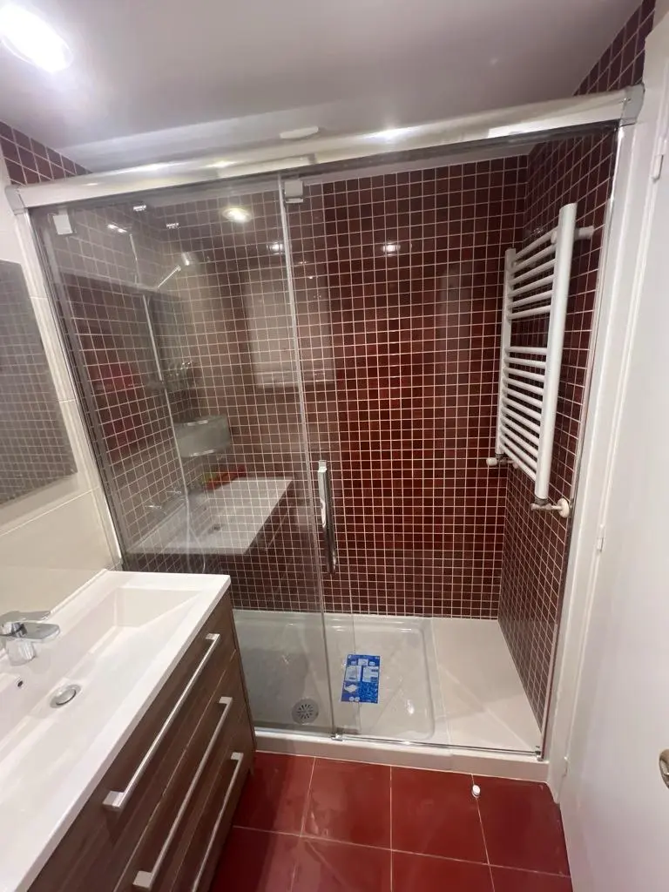

@@include('header.htm', {"title": "Cambio de Ducha y Mampara | RENOVARTE Santa Comba", "description": "Cambio de plato de ducha y mampara en baño en Santa Comba, A Coruña. Instalación de ducha moderna al ras del suelo por RENOVARTE."})
@@include('blocks/navigation-1.htm')
@@include('blocks/page-header.htm', {"title": "Cambio de Ducha y Mampara"})

<section id="main-container" class="main-container">
  <div class="container">
    <div class="row">
      <div class="col-lg-8">
        <div id="page-slider" class="page-slider small-bg">

          <div class="item">
            
          </div>

          <div class="item">
            
          </div>

          <div class="item">
            
          </div>

          <div class="item">
            
          </div>

          <div class="item">
            
          </div>


          <div class="item">
            
          </div>

          <div class="item">
            
          </div>
        </div>
        <!-- Page slider end -->
      </div>
      <!-- Slider col end -->

      <div class="col-lg-4 mt-5 mt-lg-0">
        <h3 class="column-title mrt-0">Cambio de Ducha y Mampara</h3>
        <p>Proyecto de renovación de baño enfocado en la sustitución completa del plato de ducha antiguo por uno nuevo de nivel al ras del suelo, junto con cambio de mampara. Una transformación que moderniza completamente el espacio de la ducha, mejorando tanto la funcionalidad como la estética del baño con acabados contemporáneos y una ducha más accesible y cómoda.</p>

        <ul class="project-info list-unstyled">
          <li>
            <p class="project-info-label">Ubicación</p>
            <p class="project-info-content">Santa Comba, A Coruña</p>
          </li>
          <li>
            <p class="project-info-label">Trabajos</p>
            <p class="project-info-content">Cambio de plato de ducha, instalación de mampara nueva</p>
          </li>
          <li>
            <p class="project-info-label">Tipo</p>
            <p class="project-info-content">Cambio de Ducha y Mampara</p>
          </li>
          <li>
            <p class="project-info-label">Característica</p>
            <p class="project-info-content">Ducha al ras del suelo moderna</p>
          </li>
          <li>
            <p class="project-info-label">Categorías</p>
            <p class="project-info-content">Residencial, Baño, Interiores</p>
          </li>
        </ul>
      </div>
      <!-- Content col end -->
    </div>
    <!-- Row end -->
  </div>
  <!-- Conatiner end -->
</section>
<!-- Main container end -->
@@include('blocks/budget-request.htm')
@@include('footer.htm')
